試される大地・北海道へ潜入
執筆日時：
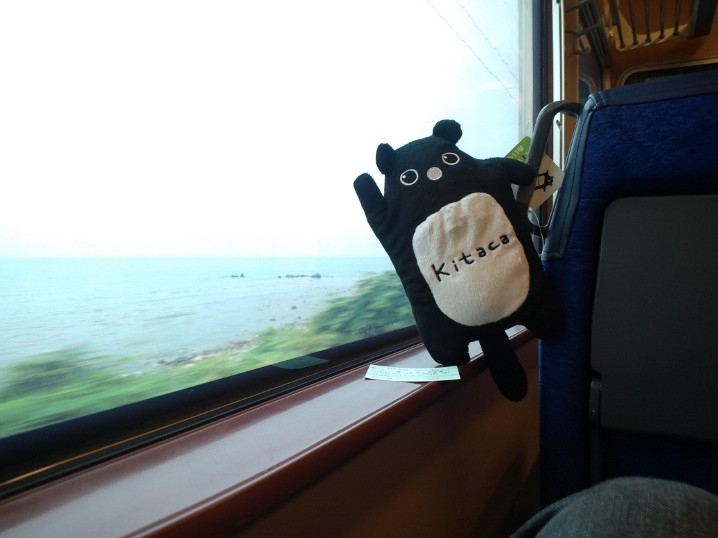
この世に爆誕して早幾星霜。にも関わらず、いまだ津軽海峡を超えたことはなかった*1。試される大地・北海道。そこは人間ではなく、自然が支配する大地。興奮と不安、そして恐怖にかわるがわる襲われ、結局、出発当日は朝まで一睡もできなかった。重い体を引きずって始発の快速電車に乗り込み、羽田空港を目指す。
食生活
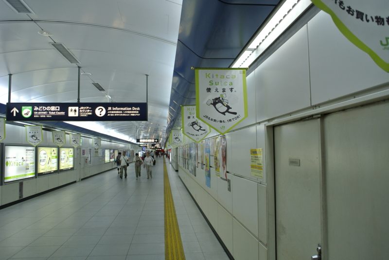
空港で迎えてくれるのは、大量のエゾモモンガ。彼らは北海道民の貴重なタンパク源であり、道民にとってはもっとも身近な生き物であるといえる。たとえば、道民が利用する電子貨幣「Kitaca（キタカ）」のマスコットキャラクターにも選ばれているほどだ。この「Kitaca」は関東で流通する「Suica」の完全なパクりであり、「Suica」と完全な互換性を持つ。また、ネーミング（来たか）は関西の「Icoca（イコカ・行こか）」からインスパイアされたモノ。おそらく、今いくよ・くるよ師匠の影響も受けているものと思われる。インスパイアと称したアイデアの無断借用、まことにケシカランといえる。
交通
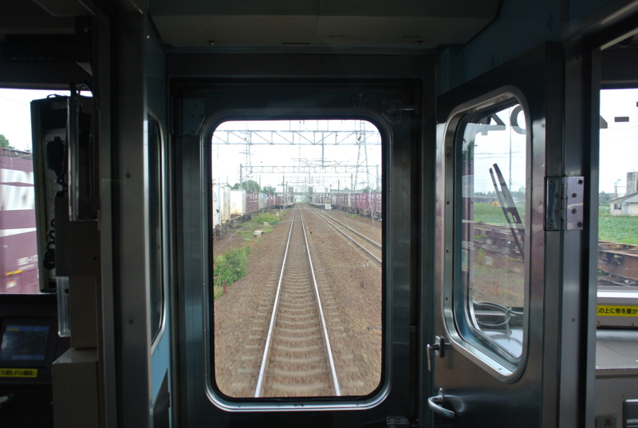
列車に乗るとまず感じられるのは、カーブの少なさ。北海道では何もかもが広く・真っ直ぐだ。おそらく、小さく・曲げて作る技術がないのであろう。
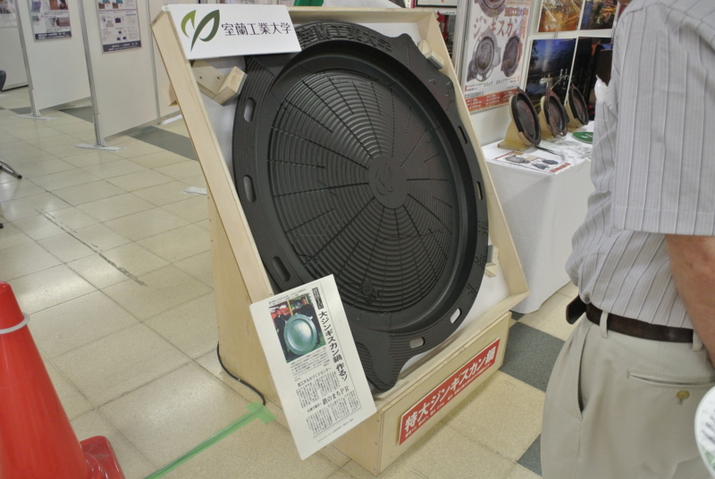
（参考：地元の大学が総力を上げて作り上げた最先端のジンギスカン鍋）
ただし、列車の運行自体は非常にレベルの高いもので、なかなか侮れないものがある。途中、踏切を無視して線路を横断する老婆がいたのだが、運転手は遠くからそれを目ざとく発見し、急ブレーキにて事故を回避した。わたしの目には、「何かいるようだ」としか感じられなかったのだが。線路がまっすぐでも油断せず、最新の注意をはらって運行されているのがわかる。その後、5分間ほど車掌が車内で急ブレーキによる負傷がないことを確認し、列車は再び走りだした。JR北海道といえば最近不祥事が多かったが、毎日のように人身事故を起こす首都圏の鉄道よりも優秀なのではないだろうか。結局、列車はたった3分遅れで札幌駅へすべりこんだ。
ただし、近代的な乗り物は鉄道と、本州の会社が運営する航空機のみといってよい。基本的な交通手段は馬車・自転車・船・人力車など、前近代的なものに限られている。
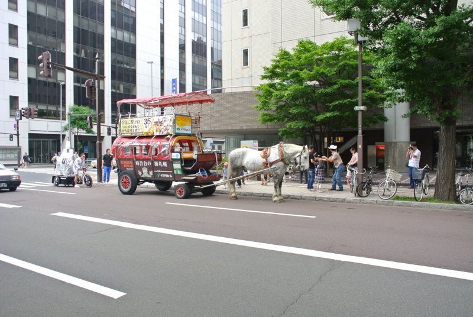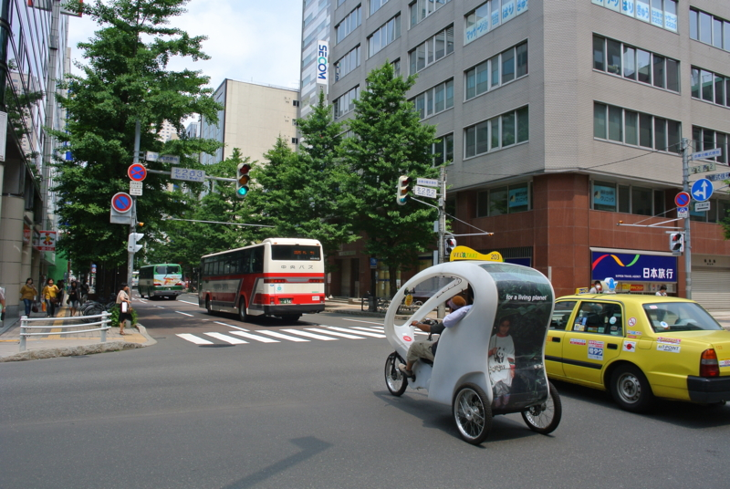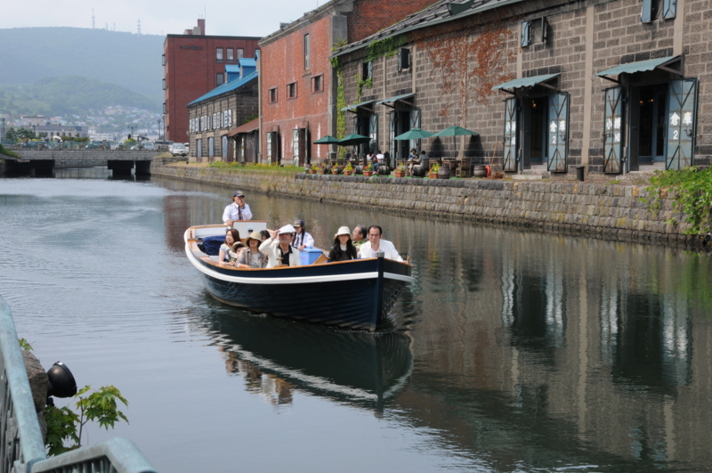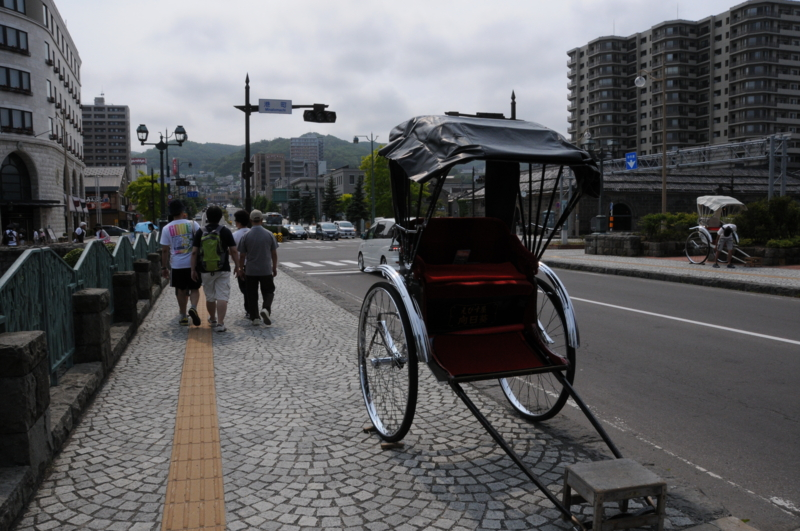
クルマが走っているように感じられるのは気のせいだ。北海道にはクルマがない。
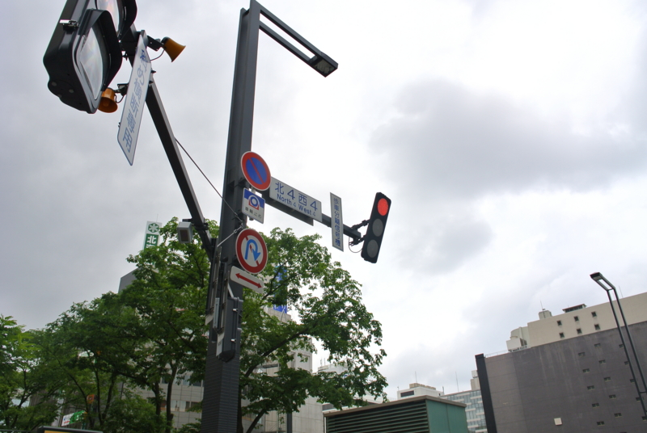
しかし、信号は存在する。不自然に薄く、そして縦に、前に傾けて配置されている。おそらく、真っ直ぐ横方向に配置する技術を持たないのであろう。信号機が異様に薄いのは、実は紙芝居形式になっているためである。
宗教
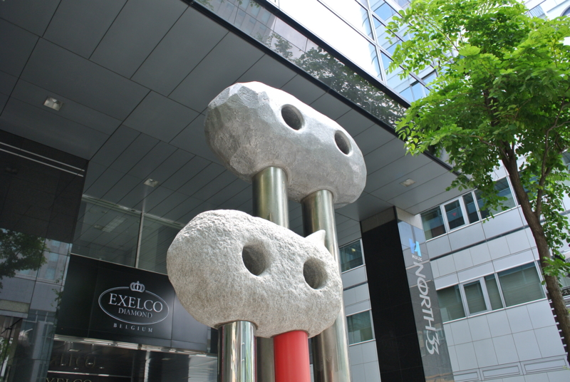
北海道では多神教が信仰されており、さまざまなモニュメントが街に点在する。
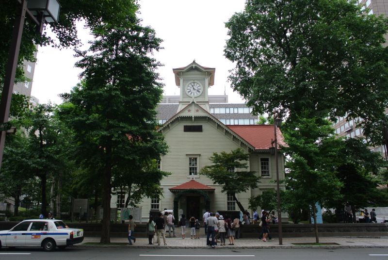
総本山は「時計台」と呼ばれる教会で、建築には北海道すべての技術力が結集されている。その割にはしょぼいので、高知・はりまや橋などと並んで「日本三大がっかり」に数えられている。ぶっちゃけ、創○学会のほうがデカい。
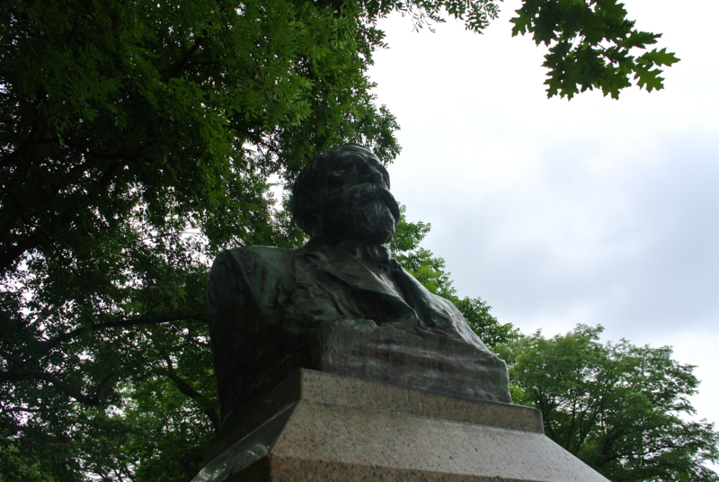
信仰の中心は、北海道大学でかつて教鞭をとったク○ーク博士だ。彼の名言「Boys, be ambitious」は本土でも人口に膾炙している。しかし、彼がその言葉に「in God」と付け加えたことはあまり知られていない。つまり、「少年は、神様のなかでアンチョビでーす」ということだ。まったく意味がわからない。
経済
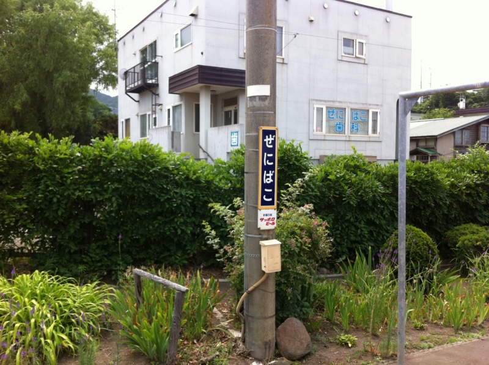
北海道の経済は非常に脆弱で、わずかに採れる美味しい食材と時折訪れる冒険者が落とすカネ、そして地方交付税に依存している。そのため、賃金は非常に安い。
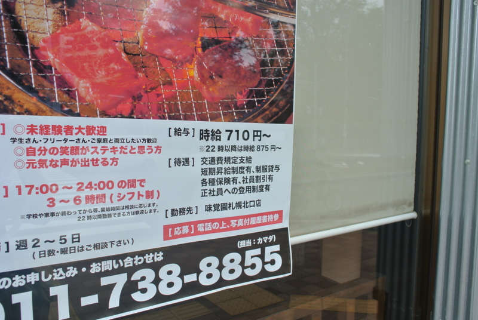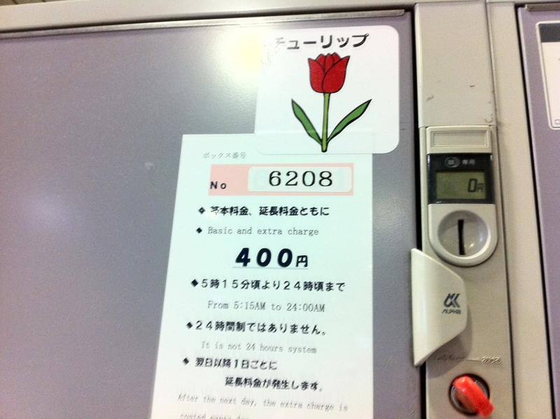
また、外貨獲得のためにはアコギな商売も辞さない。旅行者向けのコインロッカーひとつとっても非常に高い。ちなみに、東京・錦糸町でもこのサイズの相場は300円といったところである。また、小樽には怪しげな商品がならび、油断すると旅行者はすぐカモにされてしまう。
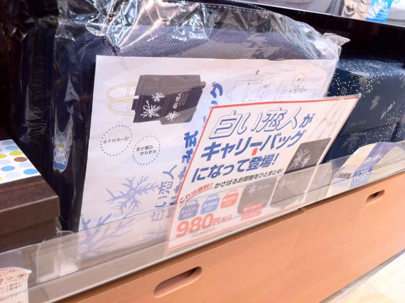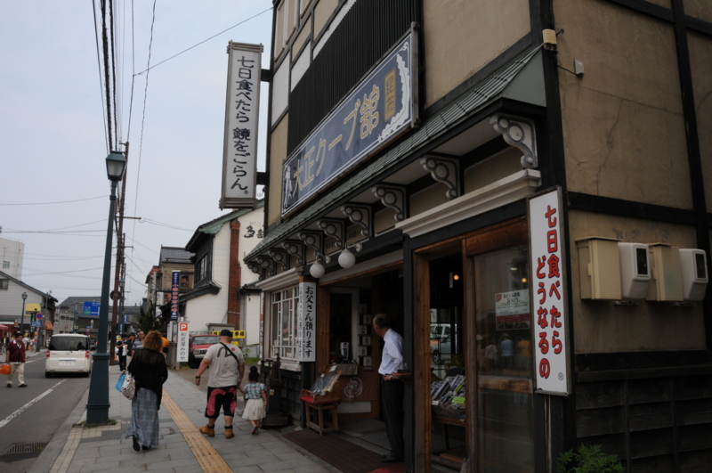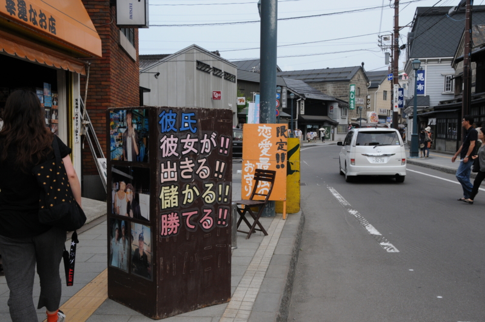
わたしはかなり警戒していたものの、帰りの列車を待つ間、うっかりエゾモモンガ人形を3000円で購入してしまった。
自然との戦い
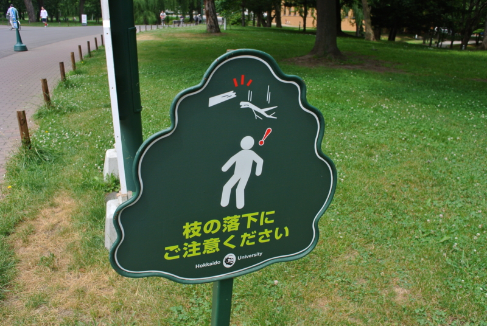
北海道の歴史は、自然との戦いの歴史である。ただ歩いていただけでも、頭上に枝が降ってくるので相当に危険だ。
それでも、夏はまだよい。冬になれば空は凍てつき、大地は見渡す限り雪に覆われる。常人には活動するのも困難な、死の大地へと変貌するのだ。
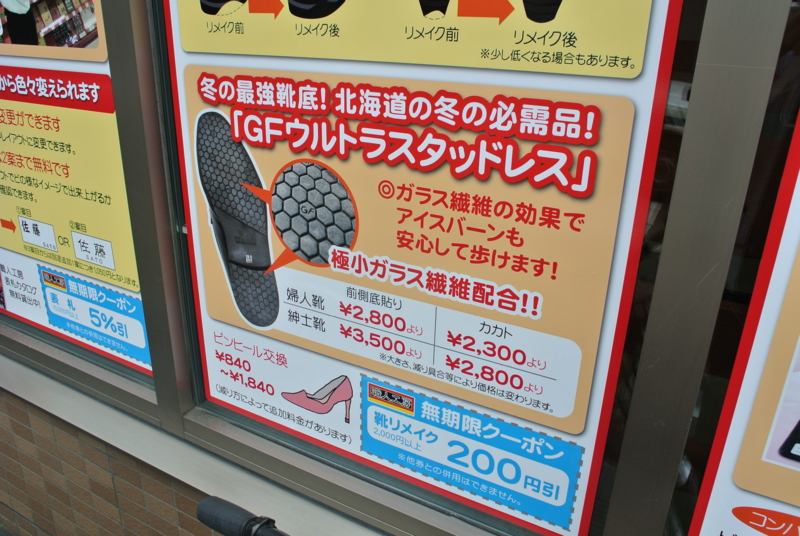
それに対抗するために編み出されたのが、この滑らない靴である。本州の豪雪地帯でも冬場、クルマへスタッドレスタイヤを装着することがあるが、北海道ではそれを人の靴の裏にまで装備する。
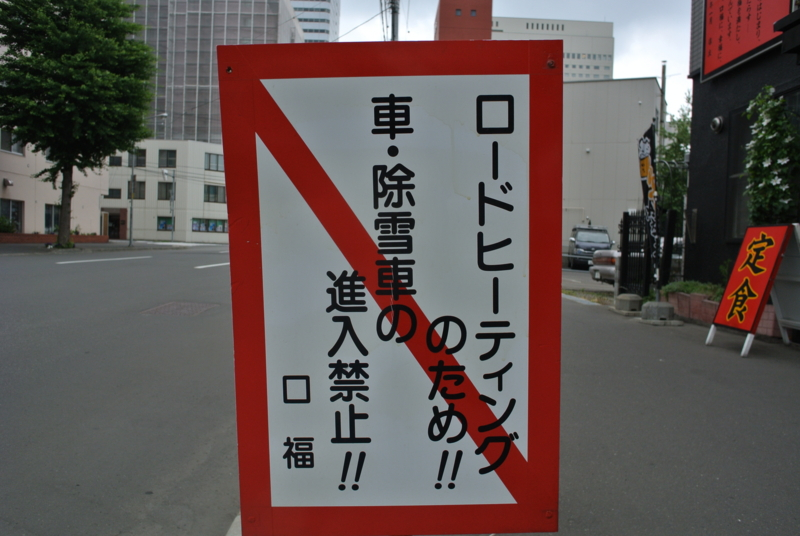
また、首邑・札幌では北海道みんが誇る最先端技術「ロードヒーター」が配備されている。コレがあれば道路は凍らず、なんとか馬車や人力車による往来が可能だ。
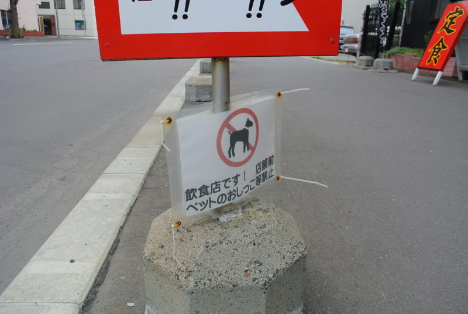
しかしそれにも弱点がある。イヌが散歩中にウンチができないのだ。看板にはもっともらしく「飲食店であるため」「オシッコをするな」などと書かれているが、実はこれ、ロードヒーターの弊害なのであり、ウンチこそが問題なのだ。
というのも、ロードヒーターで犬がウンチをすると、またたくまにミディアムレアへと焼き上げられてしまう。これが東京であれば、ホカホカのできたてウンチもやがて冷め、いずれ風化して土くれとなる。しかし、ここ札幌ではホカホカのまま、朽ちることなく春まで保存される。街がいったいどのような惨状になるか、賢明な読者におかれては容易に想像がつくことだろう。
*1:ちなみに、沖縄も行ったことがない。青森・鹿児島には小学生の頃に行ったことがある。